余白の暮らし ／ 人物原画 ／ 2026.11.23
人物原画を見比べる
15点の独立した原画を、16の条件で確認する一覧です。AとGには同じ画像を使っています。背景を切り替えると、人物の輪郭や透明な部分を見比べられます。
原画生成済み · 縮小確認とゲーム適用は別工程
画像の背景
現在：生成り
画像か「元PNGを開く」を選ぶと、原寸のファイルが開きます。キャプションは元設定と比較の観点です。H・IはAとの輪郭差、衣装4種は同じ人物の服の違い、カヤは胸像と全身の一致を確認します。
A · 基準
卵型の輪郭と柔らかな細い目。Gはこの画像と同一。H・Iの比較基準です。
元PNGを開く ↗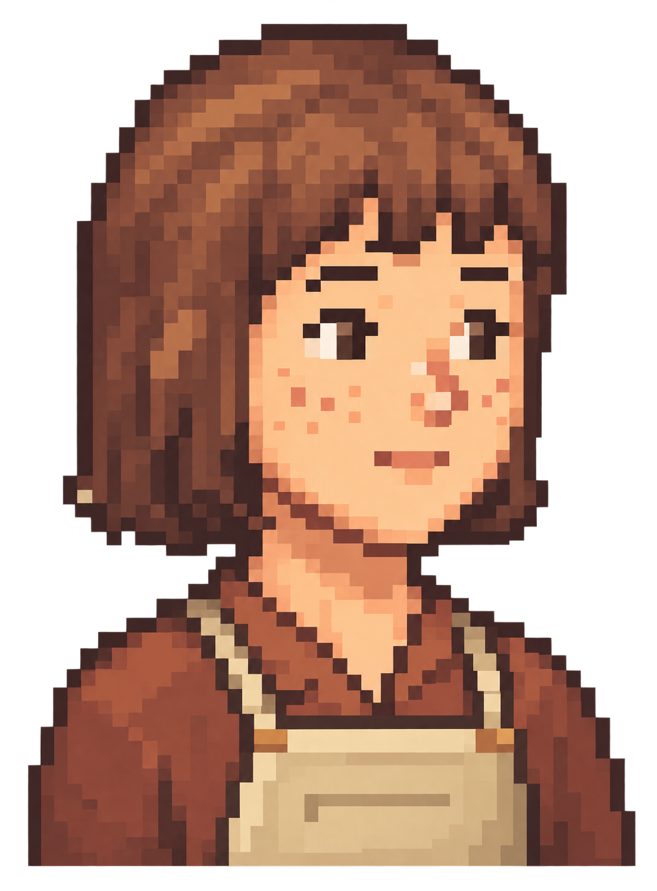
B
栗色のおかっぱとそばかす。赤茶の仕事着に、淡いクリーム色の前掛け。
元PNGを開く ↗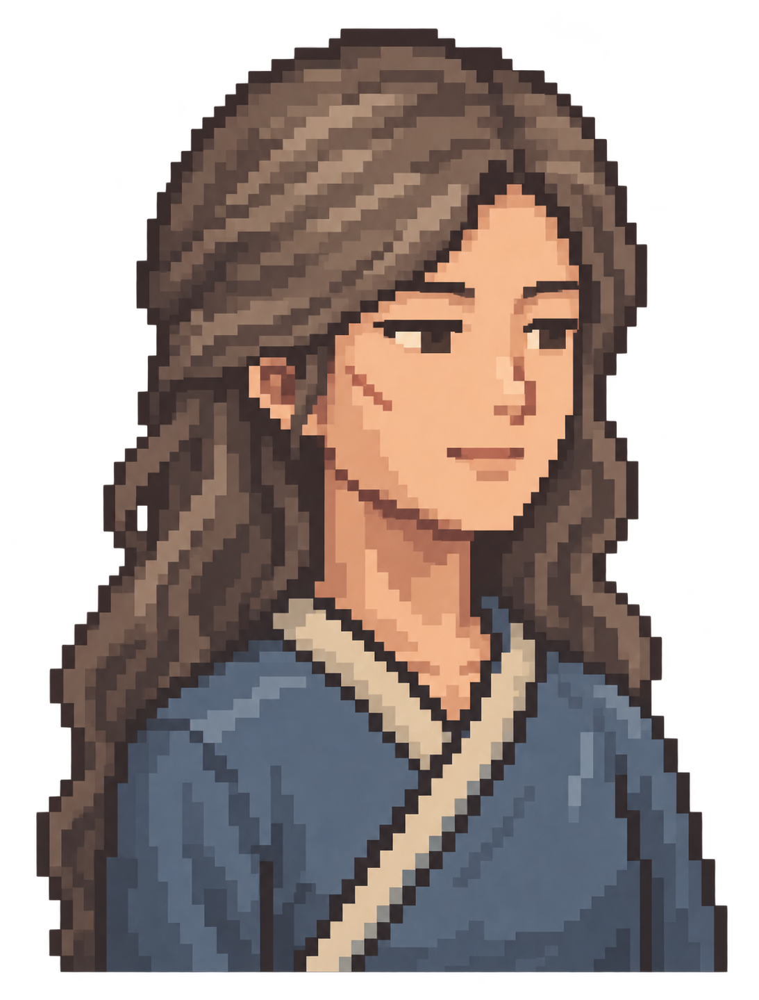
C
灰褐色の長髪と角張った輪郭。切れ長の目、頬の傷、藍色の巻き襟を確認。
元PNGを開く ↗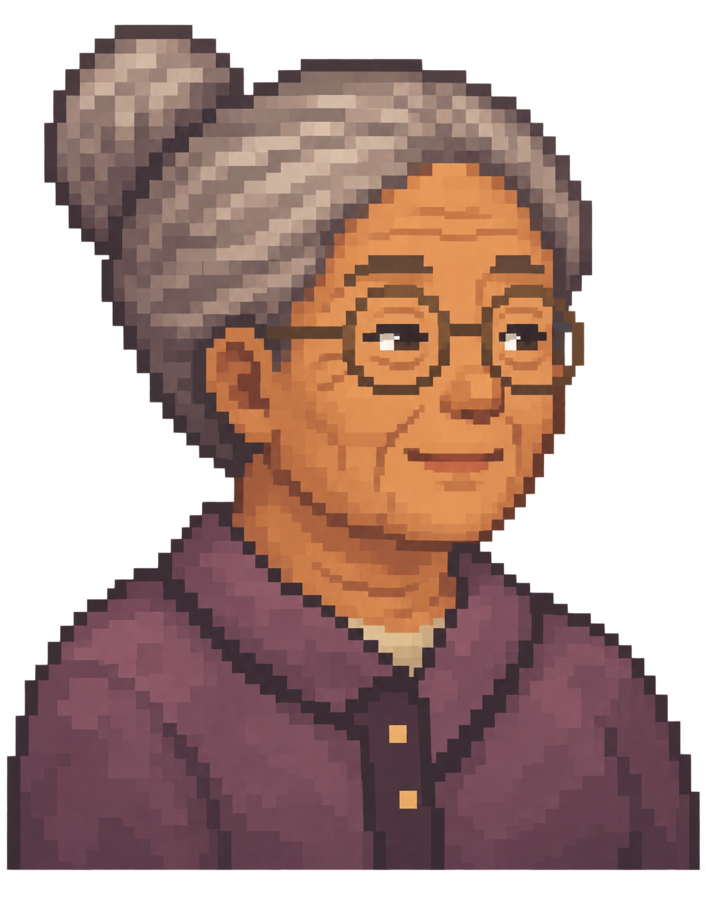
D
老年の顔、銀色のまとめ髪と丸眼鏡。がっしりした体格と紫の外套。
元PNGを開く ↗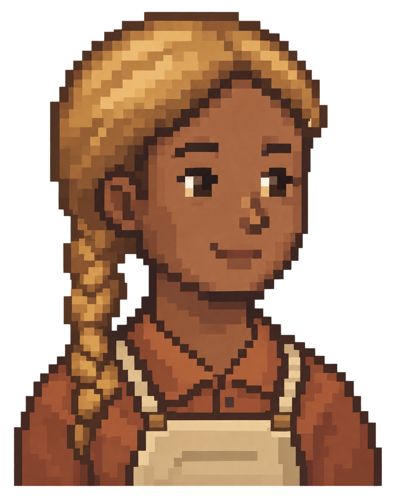
E
深い褐色の肌と蜂蜜色の三つ編み。仕事着の上に淡いクリーム色の前掛け。
元PNGを開く ↗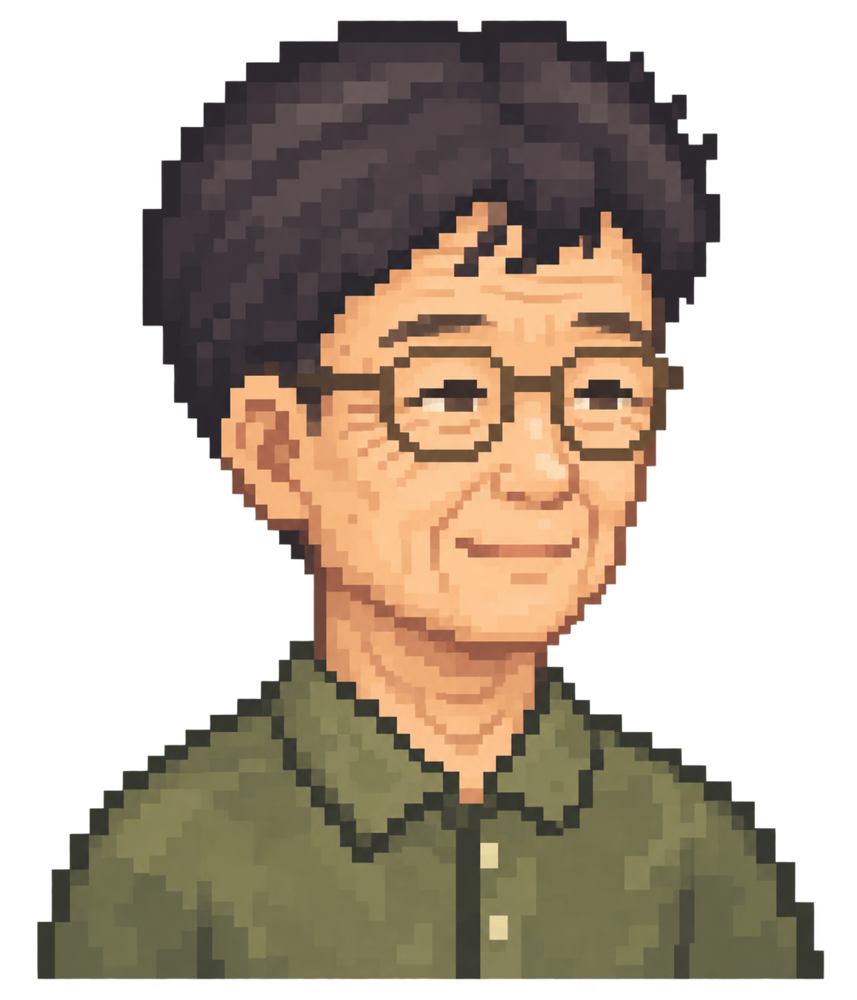
F
黒い短髪・丸眼鏡・緑のシャツを維持。顔のしわや輪郭で老年らしさを確認。
元PNGを開く ↗
G · Aと同じ
Aと同じ設定・同じ画像の対照例。別の人物や、新たな生成結果ではありません。
元PNGを開く ↗H · 丸い輪郭
Aとの輪郭差を比較。髪・目・肌・表情・服が同じ条件を保つかも確認。
元PNGを開く ↗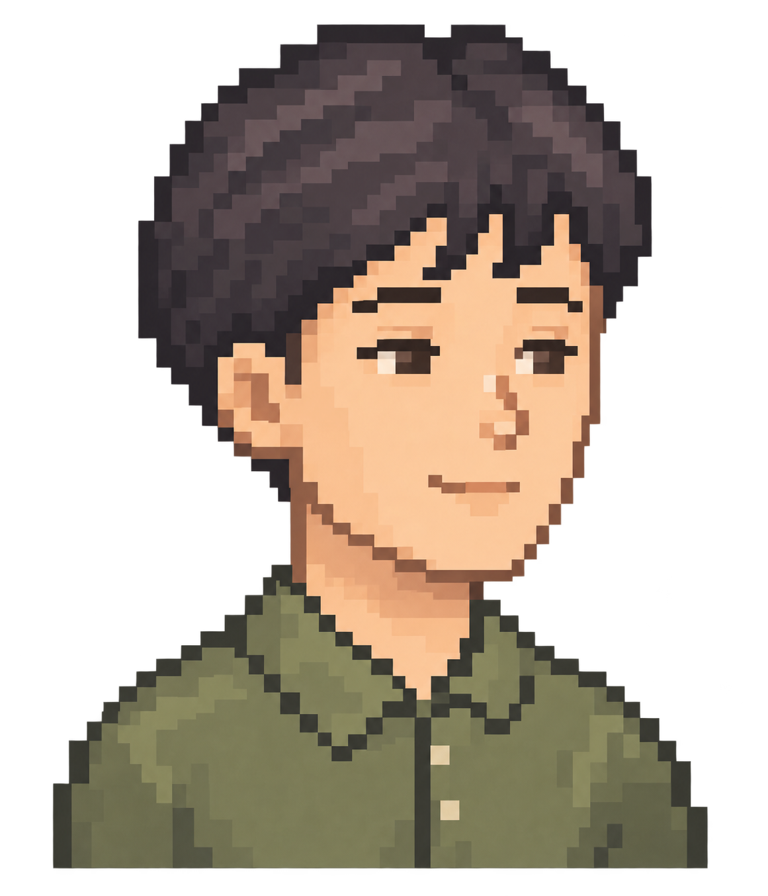
I · 角張った輪郭
A・Hと顔の形を比較。輪郭以外の特徴や構図の一致も確認します。
元PNGを開く ↗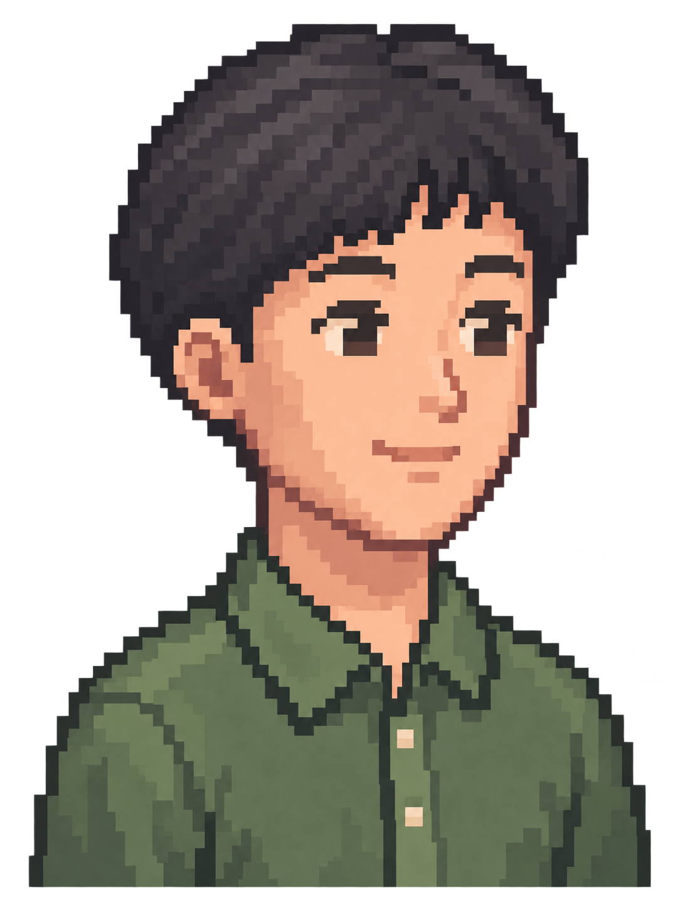
シャツ
衣装4種の基準となる人物。Aとは肌・年齢・目の設定が異なります。
元PNGを開く ↗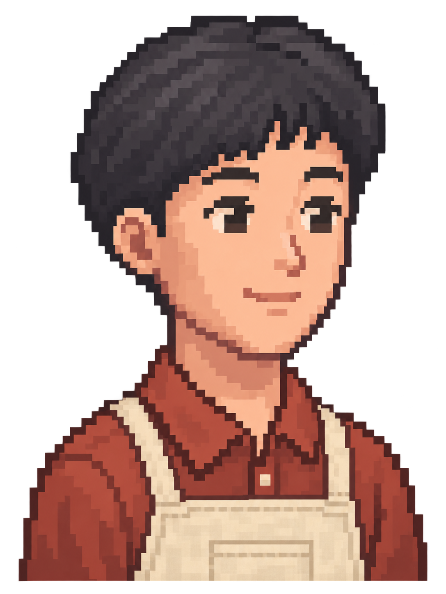
前掛け
シャツと同じ人物で衣装を比較。赤茶の仕事着に淡いクリーム色の前掛け。
元PNGを開く ↗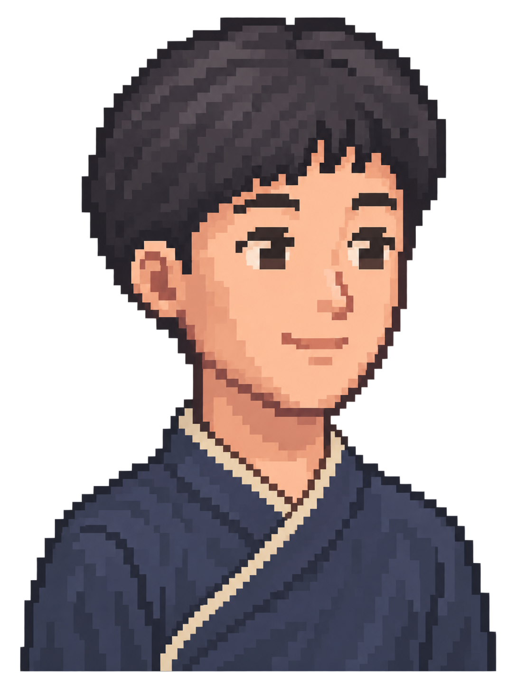
巻き襟
同じ顔・髪・体格のまま、藍色の巻き襟を比較。襟の重なりも確認。
元PNGを開く ↗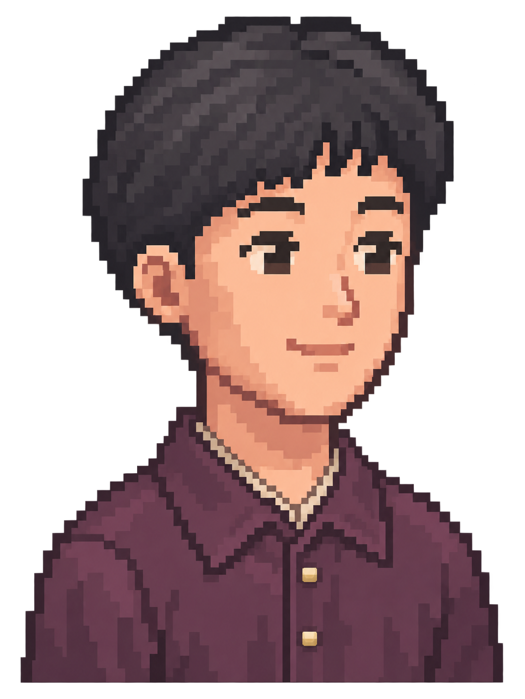
外套
同じ人物に紫色の外套。服の形と色の違い、顔や表情の一致を確認。
元PNGを開く ↗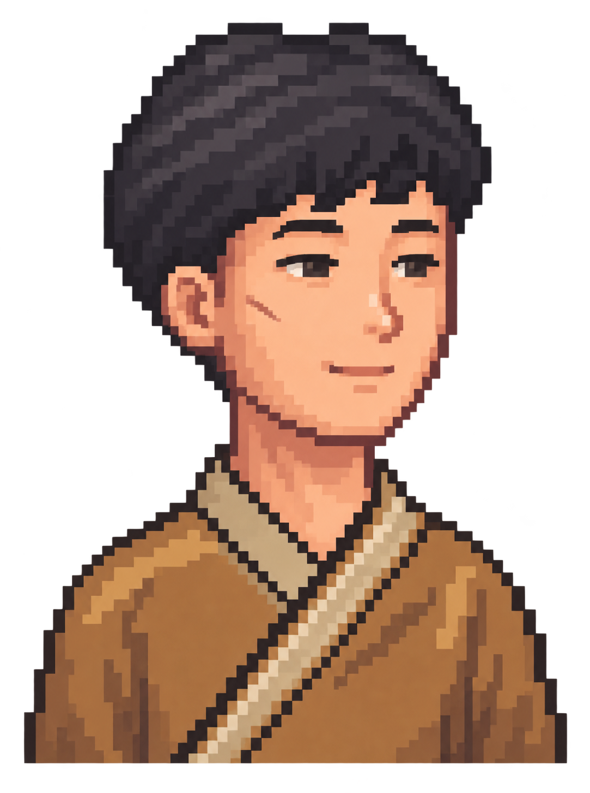
カヤ · 胸像
黒い短髪と頬の傷。全身のカヤと、髪・顔・傷の位置・服を照合します。
元PNGを開く ↗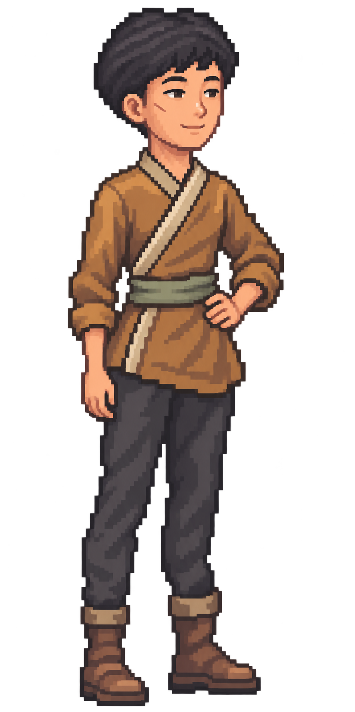
カヤ · 全身
胸像と同じ人物として照合。約5頭身の成人の身体と、元の姿勢を確認。
元PNGを開く ↗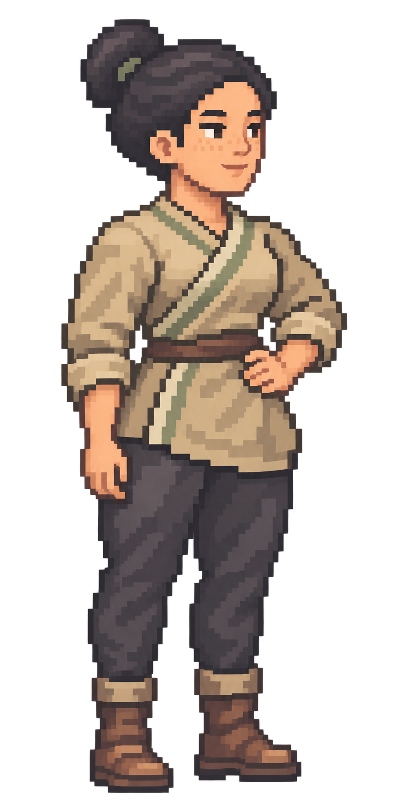
スイ · 全身
壮年の顔、そばかす、がっしりした体格。約5頭身の成人として確認。
元PNGを開く ↗